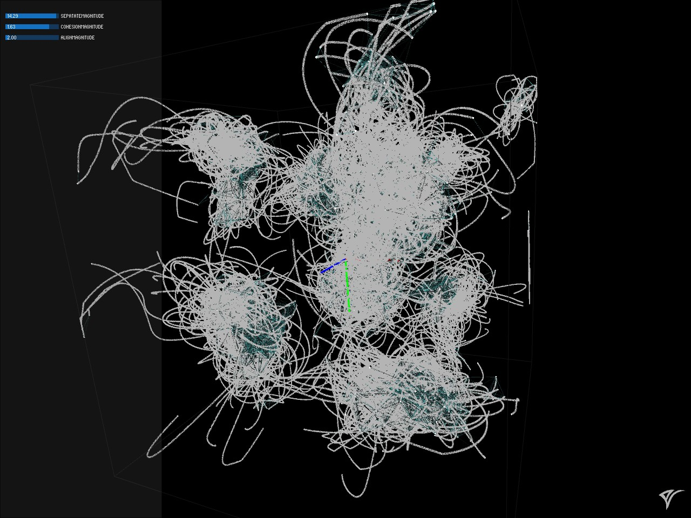
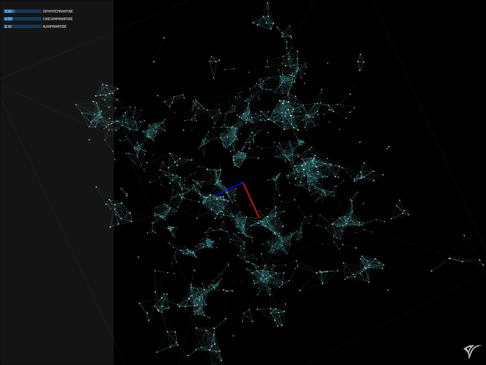
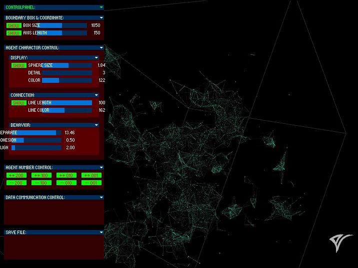
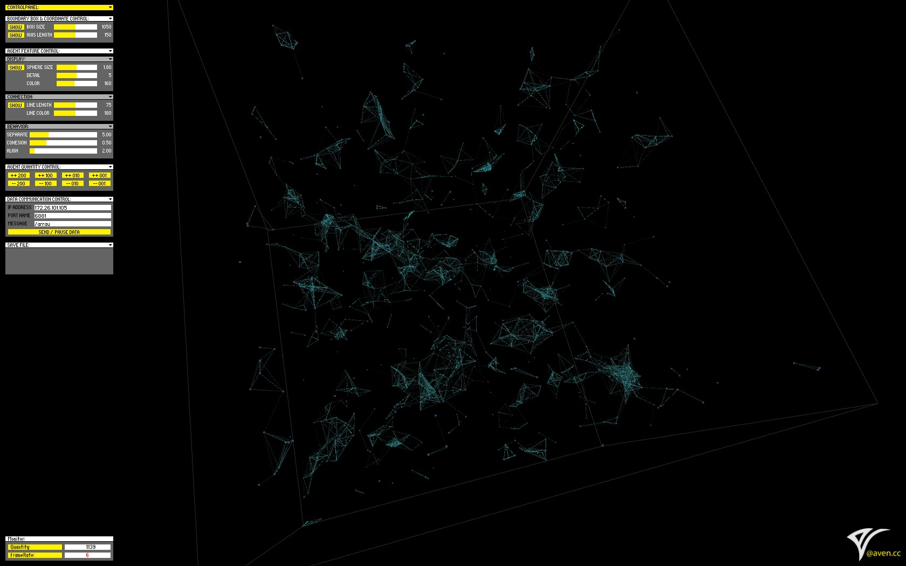

Aves
Spring 2015
Overview
Aves is a software and tool built for architects who use grasshopper and have the needs to implement a flocking system.
The idea comes from my experience as an architecture student doing Mercedes Benz 4S shop design; I had the
idea of generating the architecture's layout(plan) based on a simulation of users' movement and behavior.
But no easy and satisfying method was find especially with no programing knowledge.
After joined IMA, I got the opportunity to audit IMA foundation class "Interaction Lab"(lead by IMA
professor Matthew Belanger) and also learned how to program.
As final project of this class, I implemented the flocking system in processing and make it available to
grasshopper and rhino through OSC protocol.
Aves, as a software, is developed based on the course work with better constructed code and a well designed
interface.
Documentation
The original processing sketch as Interaction Lab course project implemented a flocking
system in two dimension.
And it follows flocking rules:(more
details on flocking wiki.)
- Separation - avoid crowding neighbors(short range repulsion).
- Alignment - steer towards average heading of neighbors.
- Cohesion - steer towards average position of neighbors (long range attraction).
According to flocking rules mentioned previously, this sketch also have 3 parameters to control the
separation, alignment and cohesion respectfully.
Since the idea is to create a tool which can simulate flocking behavior for architecture design purpose, the
first move is to make it in 3D.
Another experiment has been made during the development is to keep the trail of each boid and create a 3 dimensional sculpture.
Then OSC component is introduced and will send current boids' location to Grasshopper client with OSC protocol. In order to make it work as a tool and software, a graphic interface then been designed.
 After the main structure is done, I spent more time finalizing the interface design and implementation.
In grasshopper(and plugin ghowl), a structured OSC message will be received and contains current boids' location data. Thus, a flocking system can be implemented with few programming work and ready for further development and creation.